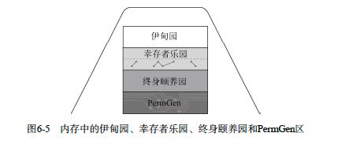
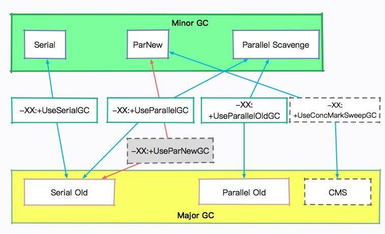

JVM
Table of Contents
Mechanical Sympathy: Java Garbage Collection Distilled
1. JVM GC基本知识和配置选项
JVM GC方面文章
- Sun jdk 1.6 gc http://www.slideshare.net/BlueDavy/sun-jdk-16-gc
- Java SE 6 HotSpot[tm] Virtual Machine Garbage Collection Tuning : http://www.oracle.com/technetwork/java/javase/gc-tuning-6-140523.html
- Performance Tuning Garbage Collection in Java : http://www.petefreitag.com/articles/gctuning/
- java - Garbage Collection and Threads - Stack Overflow : http://stackoverflow.com/questions/2085544/garbage-collection-and-threads
- JVM performance optimization
- JVM performance optimization, Part 1: A JVM technology primer http://www.javaworld.com/javaworld/jw-08-2012/120821-jvm-performance-optimization-overview.html
- JVM performance optimization, Part 2: Compilers http://www.javaworld.com/javaworld/jw-09-2012/120905-jvm-performance-optimization-compilers.html
- JVM performance optimization, Part 3: Garbage collection http://www.javaworld.com/javaworld/jw-10-2012/121010-jvm-performance-optimization-garbage-collection.html
- JVM performance optimization, Part 4: C4 garbage collection for low-latency Java applications http://www.javaworld.com/javaworld/jw-11-2012/121107-jvm-performance-optimization-low-latency-garbage-collection.html
- Understanding JVM Internals | CUBRID Blog http://www.cubrid.org/blog/dev-platform/understanding-jvm-internals
- The Principles of Java Application Performance Tuning | CUBRID Blog : http://www.cubrid.org/blog/dev-platform/the-principles-of-java-application-performance-tuning/
- Understanding JVM Internals, from Basic Structure to Java SE 7 Features | Architects Zone http://architects.dzone.com/articles/understanding-jvm-internals
- Garbage Collection Optimization for High-Throughput and Low-Latency Java Applications | LinkedIn Engineering : http://engineering.linkedin.com/garbage-collection/garbage-collection-optimization-high-throughput-and-low-latency-java-applications
- Java Garbage Collection Introduction http://javapapers.com/java/java-garbage-collection-introduction/
- 24 案例分析：大型项目如何进行性能瓶颈调优？.md
为了监控GC情况添加如下参数 `-verbose:gc -XX:-PrintGCDetails -XX:+PrintGCTimeStamps -XX:+PrintGCApplicationConcurrentTime`
- `-XX:+PrintGCDetails` 关于GC更详细的细节
- `-XX:+PrintGCDateStamps` GC操作的时间戳
- `-XX:+PrintGCApplicationConcurrentTime` 在应用线程仍然运行的情况下用在GC上的时间
下面GC参数可供参考 `-server -Xms8192m -Xmx8192m -XX:NewSize=1024m -XX:+UseConcMarkSweepGC -XX:+CMSIncrementalMode -XX:+CMSIncrementalPacing -XX:+UseParNewGC -XX:ParallelGCThreads=8`
- `-XX:+UseConcMarkSweepGC` 打开CMS收集
- `-XX:+CMSIncrementalMode` 增量模式（一般都需要）
- `-XX:+CMSIncrementalPacing` 配合增量模式，根据应用程序的行为自动调整每次执行的垃圾回收任务的幅度（一般都需要）
- `-XX:+UseParNewGC` 并发收集年轻代
- `-XX:ParallelGCThreads=<N>` GC使用的线程数
非标准的JVM选项
- 以-X:开头的选项不是标准选项，在其他JVM上可能不可用。
- 以-XX:开头的是扩展选项，不要随便使用。很多与性能相关的选项都是扩展选项。
- 有些选项相当于布尔型的参数，并且前面有+或-作为它的开关。还有带参数的选项，比如-XX:CompileThreshold=1000（这个方法会在调用次数达到1000之后才被JIT编译）。
- 还有一些参数（包括很多标准参数）既没有开关也不能带参数。
Java平台对基本的标记清除方法进行了改进，采用“分代式垃圾收集”。在这种方法中，会根据Java对象的生命周期将堆内存划分为不同的区域。在对象的生存期内，对它的引用可能指向内存中几个不同区域（如图6-5所示）。在垃圾收集过程中，可能会将对象移动到不同区域。 这样做是因为根据对系统运行时期的研究，发现对象的生存期或者较短，或者很长。Java平台把堆内存划分为不同区域可以充分利用对象生命周期的这种特点。
- 伊甸园 eden
- 幸存者乐园 s0/s1(from/to)
- 终身园 old generation

关于Major/Minor GC:
- 新生代GC（Minor GC）：指发生在新生代的垃圾收集动作，因为Java对象大多都具备朝生夕灭的特性，所以Minor GC非常频繁，一般回收速度也比较快。
- 老年代GC（Major GC/Full GC）：指发生在老年代的GC，出现了Major GC，经常会伴随至少一次的Minor GC（但非绝对的，在Parallel Scavenge收集器的收集策略里就有直接进行Major GC的策略选择过程）。
- Major GC的速度一般会比Minor GC慢10倍以上。
2. Java Memory Model(JMM)
Java在其混沌初开的时期（Java 1.0）就已经把volatile作为关键字了，它是一种简单的对象域同步处理办法，包括原始类型。一个volatile域需遵循如下规则：
- 线程所见的值在使用之前总会从主内存中再读出来。
- 线程所写的值总会在指令完成之前被刷回到主内存中。
可以把围绕该域的操作看成是一个小小的同步块。程序员可以借此编写简化的代码，但付出的代价是每次访问都要额外刷一次内存。还有一点要注意，volatile变量不会引入线程锁，所以使用volatile变量不可能发生死锁。
更加微妙的是，volatile变量是真正线程安全的，但只有写入时不依赖当前状态（读取的状态）的变量才应该声明为volatile变量。对于要关注当前状态的变量，只能借助线程锁保证其绝对安全性。
volatile读写本身是有原子性的，但是结合起来却不具有原子性，所以不能用它来代替AtomicInteger。
之前发生(Happens-Before) - 这种关系表明一段代码块在其他代码开始之前就已经全部完成了。
同步约束(Synchronizes-With) 这意味着动作继续执行之前必须把它的对象视图与主内存进行同步。
JMM(Java Memory Model)的主要规则如下：
- 在监测对象上的解锁操作与后续的锁操作之间存在同步约束关系。（锁这样的对象可以用于同步约束）
- 对易失性（volatile）变量的写入与后续对该变量的读取之间存在同步约束关系。（volatile关键字可以用于同步约束）
- 如果动作A受到动作B的同步约束，则A在B之前发生。（跨线程的通过同步约束保证顺序）
- 如果在程序中的线程内A出现在B之前，则A在B之前发生。 (单线程内无条件地保证顺序)
3. 几种Java GC算法介绍
年轻代垃圾回收器
（1）Serial 垃圾收集器
处理 GC 的只有一条线程，并且在垃圾回收的过程中暂停一切用户线程。
这可以说是最简单的垃圾回收器，但千万别以为它没有用武之地。因为简单，所以高效，它通常用在客户端应用上。因为客户端应用不会频繁创建很多对象，用户也不会感觉出明显的卡顿。相反，它使用的资源更少，也更轻量级。
（2）ParNew 垃圾收集器
ParNew 是 Serial 的多线程版本。由多条 GC 线程并行地进行垃圾清理。清理过程依然要停止用户线程。
ParNew 追求“低停顿时间”，与 Serial 唯一区别就是使用了多线程进行垃圾收集，在多 CPU 环境下性能比 Serial 会有一定程度的提升；但线程切换需要额外的开销，因此在单 CPU 环境中表现不如 Serial。
（3）Parallel Scavenge 垃圾收集器
另一个多线程版本的垃圾回收器。它与 ParNew 的主要区别是：
Parallel Scavenge：追求 CPU 吞吐量，能够在较短时间内完成指定任务，适合没有交互的后台计算。弱交互强计算。
ParNew：追求降低用户停顿时间，适合交互式应用。强交互弱计算。
老年代垃圾收集器
（1）Serial Old 垃圾收集器
与年轻代的 Serial 垃圾收集器对应，都是单线程版本，同样适合客户端使用。
年轻代的 Serial，使用复制算法。
老年代的 Old Serial，使用标记-整理算法。
（2）Parallel Old
Parallel Old 收集器是 Parallel Scavenge 的老年代版本，追求 CPU 吞吐量。
（3）CMS 垃圾收集器
CMS（Concurrent Mark Sweep）收集器是以获取最短 GC 停顿时间为目标的收集器，它在垃圾收集时使得用户线程和 GC 线程能够并发执行，因此在垃圾收集过程中用户也不会感到明显的卡顿。我们会在后面的课时详细介绍它。
长期来看，CMS 垃圾回收器，是要被 G1 等垃圾回收器替换掉的。在 Java8 之后，使用它将会抛出一个警告。
Java HotSpot(TM) 64-Bit Server VM warning: Option UseConcMarkSweepGC was deprecated in version 9.0 and will likely be removed in a future release.
除了上面几个垃圾回收器，我们还有 G1、ZGC 等更加高级的垃圾回收器，它们都有专门的配置参数来使其生效。
通过 -XX:+PrintCommandLineFlags 参数，可以查看当前 Java 版本默认使用的垃圾回收器。你可以看下我的系统中 Java13 默认的收集器就是 G1。
java -XX:+PrintCommandLineFlags -version
-XX:G1ConcRefinementThreads=4 -XX:GCDrainStackTargetSize=64 -XX:InitialHeapSize=134217728 -XX:MaxHeapSize=2147483648 -XX:MinHeapSize=6815736 -XX:+PrintCommandLineFlags -XX:ReservedCodeCacheSize=251658240 -XX:+SegmentedCodeCache -XX:+UseCompressedClassPointers -XX:+UseCompressedOops -XX:+UseG1GC
java version "13.0.1" 2019-10-15
Java(TM) SE Runtime Environment (build 13.0.1+9)
Java HotSpot(TM) 64-Bit Server VM (build 13.0.1+9, mixed mode, sharing)
以下是一些配置参数：
-XX:+UseSerialGC 年轻代和老年代都用串行收集器 -XX:+UseParNewGC 年轻代使用 ParNew，老年代使用 Serial Old -XX:+UseParallelGC 年轻代使用 ParallerGC，老年代使用 Serial Old -XX:+UseParallelOldGC 新生代和老年代都使用并行收集器 -XX:+UseConcMarkSweepGC，表示年轻代使用 ParNew，老年代的用 CMS -XX:+UseG1GC 使用 G1垃圾回收器 -XX:+UseZGC 使用 ZGC 垃圾回收器

有这么多垃圾回收器和参数，那我们到底用什么？在什么地方优化呢？
目前，虽然 Java 的版本比较高，但是使用最多的还是 Java8。从 Java8 升级到高版本的 Java 体系，是有一定成本的，所以 CMS 垃圾回收器还会持续一段时间。
线上使用最多的垃圾回收器，就有 CMS 和 G1，以及 Java8 默认的 Parallel Scavenge。
CMS 的设置参数：-XX:+UseConcMarkSweepGC。 Java8 的默认参数：-XX:+UseParallelGC。 Java13 的默认参数：-XX:+UseG1GC。
现在用的最多的，就是 Java 8 版本。如果你的服务器用的这个，那么用的最多的垃圾回收器就是 CMS，或者 G1。随着 ZGC 越来越稳定，CMS 终将会成为过去式。
目前，最先进的垃圾回收器，叫做 ZGC，它有 3 个 flag：
- 支持 TB 级堆内存（最大 4T）
- 最大 GC 停顿 10ms
- 对吞吐量影响最大，不超过 15%
4. JVM 杂项内容
synchronized 20 动手实践：从字节码看并发编程的底层实现.md
synchronized 在 JDK，包括一些框架代码中的应用是非常广泛的。在一些不需要同步的场景中，即使加上了 synchronized 关键字，由于锁升级的原因，效率也不会太差。
java agent 22 深入剖析：如何使用 Java Agent 技术对字节码进行修改.md
Java 5 版本以后，JDK 有一个包叫做 instrument ，能够实现一些非常酷的功能，市面上一些 APM 工具，就是通过它来进行的增强，这个功能对于业务开发者来说，是比较偏门的。但你可能在无意中已经用到它了，比如 Jrebel 酷炫的热部署功能（这个工具能够显著增加开发效率）。
我们上面说的这些工具的基础，就是 Java Agent 技术，可以利用它来构建一个附加的代理程序，用来协助检测性能，还可以替换一些现有功能，甚至 JDK 的一些类我们也能修改，有点像 JVM 级别的 AOP 功能。
5. JVM PrintAssemblyCode
需要反汇编插件，不然看到的就是二进制代码了。hsdis HotSpot Disassembly Plugin Downloads
这篇文章值得参考一下CompileCommand JVM option | It’s All Relative
如果我想看trino package下面生成的汇编代码，可以在 `jvm.config` 里面配置
- 允许对jvm进行diagnose
- 对所有的package都不打印汇编代码，否则每个类/方法都会打印生成的汇编代码
- 然后针对 `io/trino/sql` 这个package下面所有的类/方法打印汇编代码
-XX:+UnlockDiagnosticVMOptions -XX:-PrintAssembly -XX:CompileCommand=option,io.trino.sql.*::*,PrintAssembly,+
最后输出的结果是在 `log/var/log/launcher.log` 里面
============================= C2-compiled nmethod ============================== ----------------------------------- Assembly ----------------------------------- Compiled method (c2) 29768 25579 4 io.trino.sql.gen.ExpressionProfiler::start (12 bytes) total in heap [0x00007fc978886590,0x00007fc978886880] = 752 relocation [0x00007fc9788866e0,0x00007fc978886700] = 32 main code [0x00007fc978886700,0x00007fc9788867d0] = 208 stub code [0x00007fc9788867d0,0x00007fc9788867e8] = 24 oops [0x00007fc9788867e8,0x00007fc9788867f0] = 8 metadata [0x00007fc9788867f0,0x00007fc978886808] = 24 scopes data [0x00007fc978886808,0x00007fc978886828] = 32 scopes pcs [0x00007fc978886828,0x00007fc978886868] = 64 dependencies [0x00007fc978886868,0x00007fc978886870] = 8 nul chk table [0x00007fc978886870,0x00007fc978886880] = 16
如果加上下面两个选项, 可以在 `log/assembly.log` 里面得到比较详细的编译信息，这个日志可以喂给JITWatch来看。
-XX:+LogCompilation -XX:LogFile=assembly.log